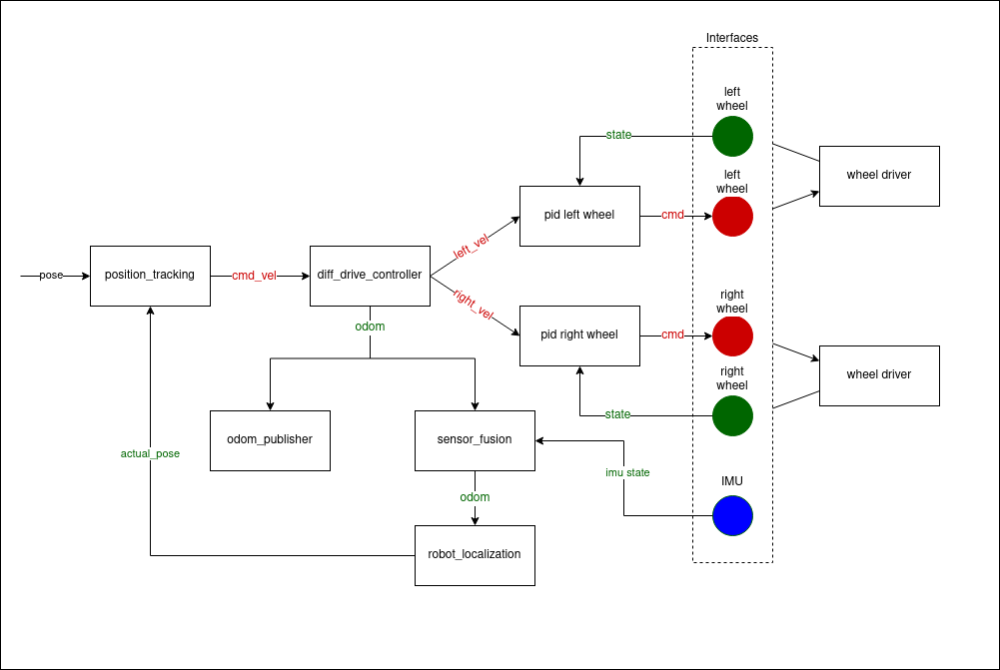

Controller Chaining / Cascade Control
This document proposes a minimal-viable-implementation of serial controller chaining as described in Chaining Controllers design document. Cascade control is a specific type of controller chaining.
Scope of the Document and Background Knowledge
This approach focuses only on serial chaining of controllers and tries to reuse existing mechanisms for it. It focuses on inputs and outputs of a controller and their management in the controller manager. The concept of controller groups will be introduced only for clarity reasons, and its only meaning is that controllers in that group can be updated in arbitrary order. This doesn’t mean that the controller groups as described in the controller chaining document will not be introduced and used in the future. Nevertheless, the author is convinced that this would add only unnecessary complexity at this stage, although in the long term they could provide clearer structure and interfaces.
Motivation, Purpose and Use
To describe the intent of this document, lets focus on the simple yet sufficient example Example 2 from ‘controllers_chaining’ design docs:
In this example, we want to chain ‘position_tracking’ controller with ‘diff_drive_controller’ and two PID controllers as well as the ‘robot_localization’ controller. Let’s now imagine a use-case where we don’t only want to run all those controllers as a group, but also flexibly add preceding steps. This means the following:
When a robot is started, we want to check if motor velocity control is working properly and therefore only PID controllers are activated. At this stage we can control the input of PID controller also externally using topics. However, these controllers also provide virtual interfaces, so we can chain them.
Then “diff_drive_controller” is activated and attaches itself to the virtual input interfaces of PID controllers. PID controllers also get informed that they are working in chained mode and therefore disable their external interface through subscriber. Now we check if kinematics of differential robot is running properly.
Once the ‘diff_drive_controller’ is activated, it exposes the ‘odom’ state interfaces that is used by ‘odom_publisher’ as well as ‘sensor_fusion’ controllers. The ‘odom_publisher’ controller is activated and attaches itself to the exported ‘odom’ state interfaces of ‘diff_drive_controller’. The ‘sensor_fusion’ controller is activated and attaches itself to the exported ‘odom’ state interfaces of ‘diff_drive_controller’ along with the ‘imu’ state interfaces.
Once the ‘sensor_fusion’ controller is activated, it exposes the ‘odom’ state interfaces that is used by ‘robot_localization’ controller. The ‘robot_localization’ controller is activated and attaches itself to the ‘odom’ state interfaces of ‘sensor_fusion’ controller. Once activated, the ‘robot_localization’ controller exposes the ‘actual_pose’ state interfaces that is used by ‘position_tracking’ controller.
After that, “position_tracking” can be activated and attached to “diff_drive_controller” that disables its external interfaces and to the ‘robot_localization’ controller which provides the ‘actual_pose’ state interface.
If any of the controllers is deactivated, also all preceding controllers needs to be deactivated.
Note
Controllers that expose the reference interfaces are switched to chained mode only when their reference interfaces are used by other controllers. When their reference interfaces are not used by other controllers, they are switched back to get references from the subscriber. However, the controllers that expose the state interfaces are not triggered to chained mode when their state interfaces are used by other controllers.
Note
This document uses terms preceding and following controller. These terms refer to such ordering of controllers that controller A precedes controller B if A claims (connects its output to) B’s reference interfaces (inputs). In the example diagram at the beginning of this section, ‘diff_drive_controller’ precedes ‘pid left wheel’ and ‘pid right wheel’. Consequently, ‘pid left wheel’ and ‘pid right wheel’ are controllers following after ‘diff_drive_controller’.
Implementation
A Controller Base-Class: ChainableController
A ChainableController extends ControllerInterface class with virtual std::vector<hardware_interface::CommandInterface> export_reference_interfaces() = 0 method as well as virtual std::vector<hardware_interface::StateInterface> export_state_interfaces() = 0 method.
This method should be implemented for each controller that can be preceded by another controller exporting all the reference/state interfaces.
For simplicity reasons, it is assumed for now that controller’s all reference interfaces are used by other controller. However, the state interfaces exported by the controller, can be used by multiple controllers at the same time and with the combination they want.
Therefore, do not try to implement any exclusive combinations of reference interfaces, but rather write multiple controllers if you need exclusivity.
The ChainableController base class implements void set_chained_mode(bool activate) that sets an internal flag that a controller is used by another controller (in chained mode) and calls virtual void on_set_chained_mode(bool activate) = 0 that implements controller’s specific actions when chained mode is activated or deactivated, e.g., deactivating subscribers.
As an example, PID controllers export one virtual interface pid_reference and stop their subscriber <controller_name>/pid_reference when used in chained mode. ‘diff_drive_controller’ controller exports list of virtual interfaces <controller_name>/v_x, <controller_name>/v_y, and <controller_name>/w_z, and stops subscribers from topics <controller_name>/cmd_vel and <controller_name>/cmd_vel_unstamped. Its publishers can continue running.
Nomenclature
There are two types of interfaces within the context of ros2_control: CommandInterface and StateInterface.
The
CommandInterfaceis a Read-Write type of interface that can be used to get and set values. Its typical use-case is to set command values to the hardware.The
StateInterfaceis a Read-Only type of interface that can be used to get values. Its typical use-case is to get actual state values from the hardware.
These interfaces are utilized in different places within the controller in order to have a functional controller or controller chain that commands the hardware.
The
virtual InterfaceConfiguration command_interface_configuration() constmethod defined in theControllerInterfaceclass is used to define the command interfaces used by the controller. These interfaces are used to command the hardware or the exposed reference interfaces from another controller. Thecontroller_manageruses this configuration to claim the command interfaces from theResourceManager.The
virtual InterfaceConfiguration state_interface_configuration() constmethod defined in theControllerInterfaceclass is used to define the state interfaces used by the controller. These interfaces are used to get the actual state values from the hardware or the exposed state interfaces from another controller. Thecontroller_manageruses this configuration to claim the state interfaces from theResourceManager.The
std::vector<hardware_interface::CommandInterface> export_reference_interfaces()method defined in theChainableControllerclass is used to define the reference interfaces exposed by the controller. These interfaces are used to command the controller from other controllers.The
std::vector<hardware_interface::StateInterface> export_state_interfaces()method defined in theChainableControllerclass is used to define the state interfaces exposed by the controller. These interfaces are used to get the actual state values from the controller by other controllers.
Inner Resource Management
After configuring a chainable controller, controller manager calls export_reference_interfaces and export_state_interfaces method and takes ownership over controller’s exported reference/state interfaces.
This is the same process as done by ResourceManager and hardware interfaces.
Controller manager maintains “claimed” status of interface in a vector (the same as done in ResourceManager).
Activation and Deactivation Chained Controllers
Chained controllers must be activated and deactivated together or in the proper order.
This means you must first activate all following controllers to have the preceding one activated.
For the deactivation there is the inverse rule - all preceding controllers have to be deactivated before the following controller is deactivated.
One can also think of it as an actual chain, you can not add a chain link or break the chain in the middle.
The chained controllers can also be activated when parsed as in a single list through the fields activate_controllers or deactivate_controllers in the switch_controllers service provided by the controller_manager.
The controller_manager spawner can also be used to activate all the controllers of the chain in a single call, by parsing the argument --activate-as-group.
Debugging outputs
The reference interfaces are
unavailableandunclaimed, when the controller exporting them is in inactive stateThe reference interfaces are
availableandunclaimed, when the controller exporting them is in an active state but is not in chained mode with any other controller (The controllers gets its references from the subscriber)The reference interfaces are
availableandclaimed, when the controller exporting them is in active state and also in chained mode with other controllers (The controller gets its references from the controllers it is chained with)
Closing remarks
Maybe addition of the new controller’s type
ChainableControlleris not necessary. It would also be feasible to add implementation ofexport_reference_interfaces()andexport_state_interfaces()method intoControllerInterfaceclass with default resultinterface_configuration_type::NONE.